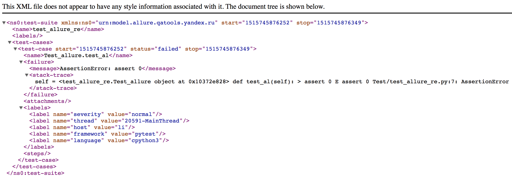
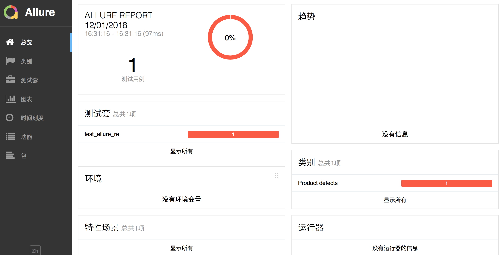

7.1.Allure安装
Allure是一个独立的报告插件，生成美观易读的报告，目前支持语言：Java, PHP, Ruby, Python, Scala, C#。
- Allure安装
1.安装pytest的插件包pytest-allure-adaptor: pip3 install pytest-allure-adaptor
- Allure帮助文档
https://docs.qameta.io/allure/#_about
- 生成Allure报告
命令行参数：pytest --alluredir report # 在执行命令目录生成report文件夹，文件夹下包含xml文件
- 示例
pytest.ini
[pytest]
;--html=./report.html
;删除原生html，增加Allure
addopts = -s --alluredir report
# 测试路径
testpaths = ./Test
# 测试文件名
python_files = test_*.py
# 测试类名
python_classes = Test_*
# 测试的方法名
python_functions = test_*
test_all.py
class Test_allure:
def setup(self):
pass
def teardown(self):
pass
def test_al(self):
assert 0
操作步骤：
1.命令行进入pytest.ini所在目录
2.输入命令：pytest
执行结果：
1.pytest.ini所在目录生成report文件夹，文件夹下生成一个xml文件

xml转html工具安装
mac版本
1.：brew install allure 2.进入report上级目录执行命令：allure generate report/ -o report/html 3.report目录下会生成index.html文件，即为可视化报告windows版本
1.下载压缩包allure-2.6.0.zip 2.解压 3.将压缩包内的bin目录配置到path系统环境变量 4.进入report上级目录执行命令：allure generate report/ -o report/html 5.report目录下会生成index.html文件，即为可视化报告